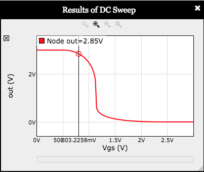
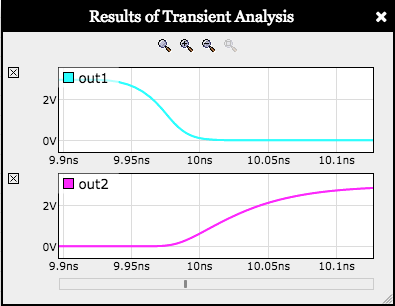
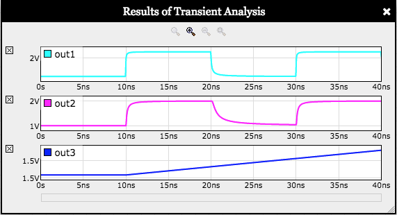
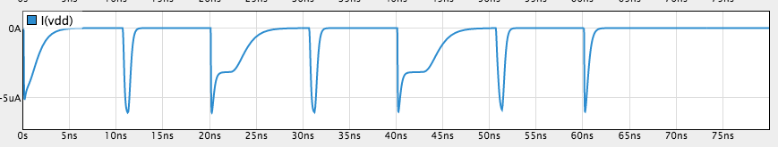
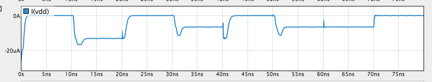

Lab 1: CMOS Technology
When entering numeric values in the answer fields, you can use integers (1000, 0x3E8, 0b1111101000), floating-point numbers (1000.0), scientific notation (1e3), engineering scale factors (1K), or numeric expressions (3*300 + 100).
Useful links:
Problem 1. CMOS VTC
Recall from lecture that the voltage transfer characteristic (VTC) is computed by setting a gate's input voltage to a sequence of values and measuring the gate's output for each input voltage, waiting until the circuit has reached a steady state. We'll use the DC sweep capability of Jade to do the measurements and plot the results.
The schematic below includes a CMOS inverter with its gate controlled by a voltage source (\(V_{GS}\)) whose value will be set to a sequence of values between 0V and 3V by the sweep tool.
 In the toolbar above the schematic, click on to run a DC sweep and then click to accept the preset sweep parameters. You should see a plot like the one shown on the right. You can make the plot window bigger by dragging the thumb in the lower right. Moving the mouse over the plot will produce a measurement for each curve at the indicated point.
We've chosen \(V_{OL}=0.3V\) and \(V_{OH}=2.7V\). Using the VTC (the red curve on the plot, labeled "out"), determine appropriate values for \(V_{IL}\) and \(V_{IH}\).
With all four voltage specifications in hand, please compute the low and high noise margins:
Notice that the low noise margin is much smaller than the high noise margin, compromising the noise immunity of the gate (the noise immunity is smaller of the two noise margins).
The problem is that the VTC isn't centered because in the manufacturing process we're modeling, n-channel MOSFETs have much better conductance than p-channel MOSFETs. To compensate, increase the width of the PFET beyond its initial value of 8 by double clicking the PFET in the schematic and changing the value for its scaled width. Experiment with the PFET width to find a value that approximately centers the VTC, i.e., so that the vin and vout curves intersect at \(V_{DD}/2 = 1.5V\).
Determine new values for \(V_{IL}\) and \(V_{IH}\), then recompute revised low and high noise margins:
Moral of the story: by sizing the MOSFETs so that the VTC is centered, we maximize the noise immunity of the inverter.
Problem 2. Contamination and propagation times
Let's measure the propagation and contamination times of a CMOS inverter. To provide realistic input waveforms and output loading, we'll use a chain of 3 CMOS inverters and make our measurements on the output of the middle inverter:
 Click on to run a device-level transient simulation, then click to accept the preset 25ns simulation time. On the resulting plot, zoom in on the first input transition, which should give you a plot like the one shown to the right. To zoom in: double-click on one of the plots (it doesn't matter which) at the time where you want to zoom in — each double-click will increase the horizontal magnification, but keep the plot stable at the time the mouse is pointing to.
For these measurements, use the following voltage specifications:
$$V_{OL}=0.3V,V_{IL}=1.1V, V_{IH}=1.8V, V_{OH}=2.7V$$We'll start by measuring the contamination and propagation times for the falling input transition at t=10ns. The contamination time is the delay from when the input becomes invalid as it crosses \(V_{IH}\) and when the output becomes invalid as it crosses \(V_{OL}\). The propagation time is the delay from when the input becomes valid as it crosses \(V_{IL}\) and when the output becomes valid as it crosses \(V_{OH}\).
Now measure the contamination and propagation times for the rising input transition at t=20ns. This time the contamination time is the delay from when the input becomes invalid as it crosses \(V_{IL}\) and when the output becomes invalid as it crosses \(V_{OH}\). The propagation time is the delay from when the input becomes valid as it crosses \(V_{IH}\) and when the output becomes valid as it crosses \(V_{OL}\).
We now have two measurements each for the contamination and propagation times. To arrive at the \(t_{CD}\) and \(t_{PD}\) specifications for this inverter, choose the appropriate measurement remembering that \(t_{CD}\) is a lower bound on the measured contamination times and \(t_{PD}\) is an upper bound on the measured propagation times. In real life, one would need measurements across the range of environment conditions (e.g., power supply voltage), input rise/fall times and possible output loadings. But, using just the two measurements we have:
Problem 3. CMOS buffers?
In building CMOS gates, we follow the rule of using only NFETs in the pulldown circuits and only PFETs in the pullup circuits. But why do we have that rule? Suppose we tried to build a CMOS buffer using an NFET pullup and PFET pulldown — what bad thing would happen?
To find out, let's run an experiment! In the schematic below, the chain of three inverters from Question 2 have been changed to a chain of three CMOS buffers by interchanging the NFETs and PFETs.
Running a 40ns device-level transient simulation, you should see a plot like:

Hmm. Measure (approximately) the lowest and highest voltages observed for out1, out2 and out3:
What's going on? First note that the power supply (\(V_{DD}\)) voltage is 3V and that an NFET is "off" when its \(V_{GS} = V_{G} - V_{S}\) is less than or equal to \(V_{TH}\), which is 0.5V in the manufacturing process we're modeling.
Think about the NFET pullup in the first buffer in the chain: its gate is the node in, its drain is vdd and its source is out1. The NFET pullup is "on" until its \(V_{GS}\) falls below 0.5V. When in is at 3V and the NFET's source node out1 reaches 2.5V, the NFET turns off and the source node voltage can raise no higher. So \(V_{OH}\) for the first buffer is only 2.5V, a "threshold drop" below the power supply voltage.
out1 is the input node for the second buffer in the chain, hooked to gate node of the second NFET pullup. The second pullup turns off when its \(V_{GS}\) falls below 0.5, but now \(V_{G}\) is only 2.5V, so \(V_{OH}\) for out2, the output of the second buffer, is only 2.0V, two threshold drops below the power supply voltage. We're slowly losing ground here — the threshold drops are accumulating!
By the time we get to the third buffer in the chain, its output is three threshold drops below the power supply voltage of 3V, so its output is unchanging at 1.5V.
A similar argument applies to the "threshold raises" induced by the PFET pulldowns and the \(V_{OL}\) for each buffer increases by a threshold as we go down the chain.
This is why we don't use PFETs in pulldown circuits or NFETs in pullup circuits — in that configuration we observe threshold drops in the max and min output voltages, which accumulate and cause the buffers to produce meaningless outputs.
Problem 4. Design Problem: CMOS gate design
Your mission this week is to design and test a circuit that implements the function \(F(A,B,C) = C + A\cdot B\) using one or more CMOS gates built from NFETs and PFETs. The truth table for F is shown below:
| A | B | C | F(A,B,C) |
|---|---|---|---|
| 0 | 0 | 0 | 0 |
| 0 | 0 | 1 | 1 |
| 0 | 1 | 0 | 0 |
| 0 | 1 | 1 | 1 |
| 1 | 0 | 0 | 0 |
| 1 | 0 | 1 | 1 |
| 1 | 1 | 0 | 1 |
| 1 | 1 | 1 | 1 |
Your circuit must contain no more than 8 MOSFETs. Remember that NFETs should only be used in pulldown circuits and PFETs should only be used in pullup circuits.
Please implement \(F = C + A\cdot B\).
Note that it is possible to design a gate where the pulldown and pullup circuitry is not complementary and still pass the tests! This happens because an NFET is much "stronger" (i.e. has a larger \(I_{DS}\)) than a PFET with the same width. So if a bug in the design leads to both the pulldown and pullup conducting, the pulldown path can overwhelm the pullup path and the gate will appear to work correctly.
Of course, in the buggy circuit, when both the pulldown and pullup are conducting, there's basically short between power and ground, and a lot of power is dissipated! The test includes a plot of I(Vdd), the current supplied by the power supply. If your gate design is fully complementary, the plot of I(Vdd) will look something like

We can see on the plot that the current flowing out of the power supply returns to 0 after all the internal nodes have finished their transitions.
But if the gate is not complementary, current flows continuously — look at the plot below between 10ns and 20ns. In this buggy circuit, the pulldown and pullup are both conducting, providing a continuous path between \(V_{DD}\) and GND. This isn't what we want! So if you see this behavior in your circuit, please change your gate design so that the pulldown and pullup paths are complementary.

To complete this design problem, click in the Jade toolbar and the built-in tester will either report any discrepencies between the expected and actual outputs, or, if your design is correct, it will record the test passed.